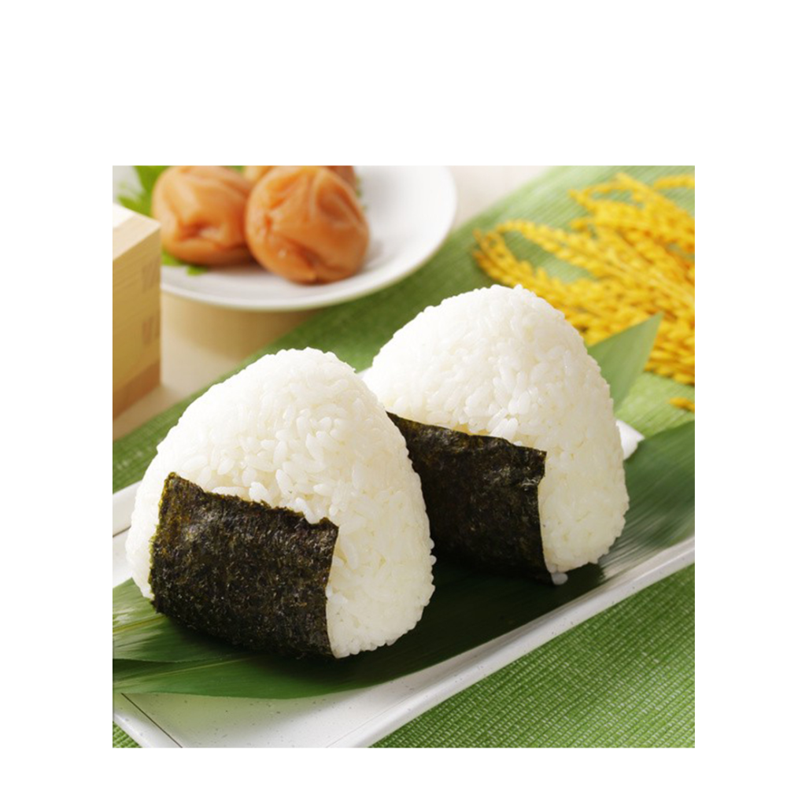

 Ингредиенты:
- Рис для суши: 450 г
- Вода: 625 мл
- Крупная соль: по вкусу
- Сухие водоросли нори: 2 штуки
- Консервированный тунец: 200 г
- Японский майонез: 50 г
- Соевый соус: по вкусу
Способ приготовления:
- Хорошо промыть рис холодной водой, пока она не станет прозрачной. Затем залить его холодной водой и оставить на 30 минут. После чего откинуть его на сито и оставить стекать в течение 15 минут. Затем залить рис свежей водой в кастрюле с толстым дном, накрыть крышкой и на среднем огне довести до кипения. Как только вода закипит, убавить огонь до минимального и варить 12–13 минут или пока рис полностью не впитает воду.
- Кастрюлю с готовым рисом снять с огня и оставить под крышкой еще на 10 минут. Затем перемешать его деревянной ложкой и дать ему немного остыть. Продолжать работать нужно с теплым рисом.
- Для начинки размять тунец вилкой и смешать его с майонезом.
- Смочить руки водой, чтобы к ним не прилипал рис. Затем растереть руки с солью: макнуть три пальца в солонку и распределить эту соль по обеим рукам. Взять в руку комочек риса, сделать в его центре углубление, положить начинку (ее должно быть втрое меньше, чем риса), сложить рис так, чтобы он закрыл всю начинку. Аккуратно придать рису форму треугольника.
- На готовые онигири приклеить полоски нори. Подавать с соевым соусом.